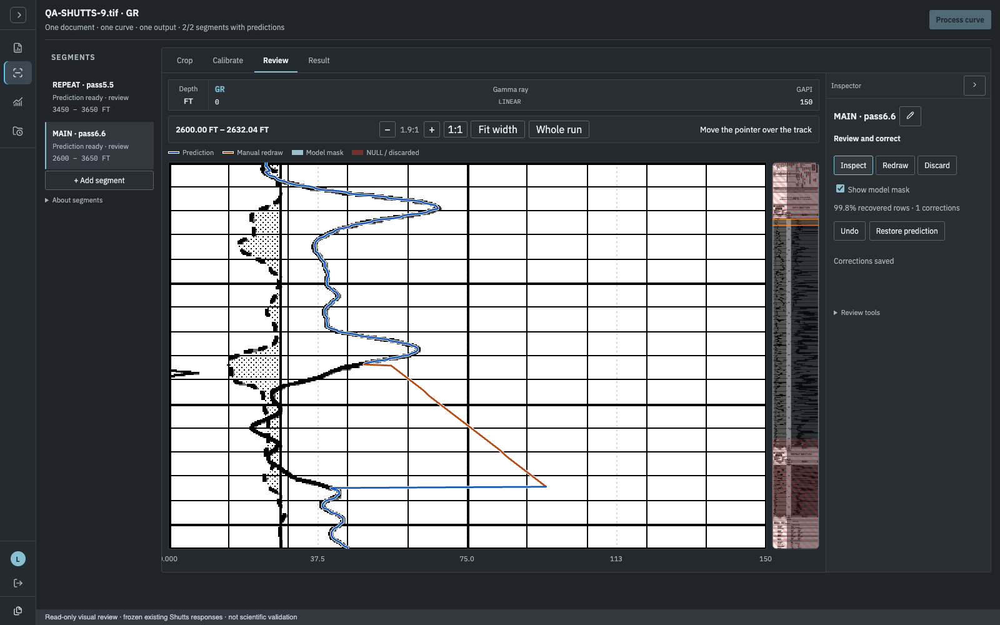
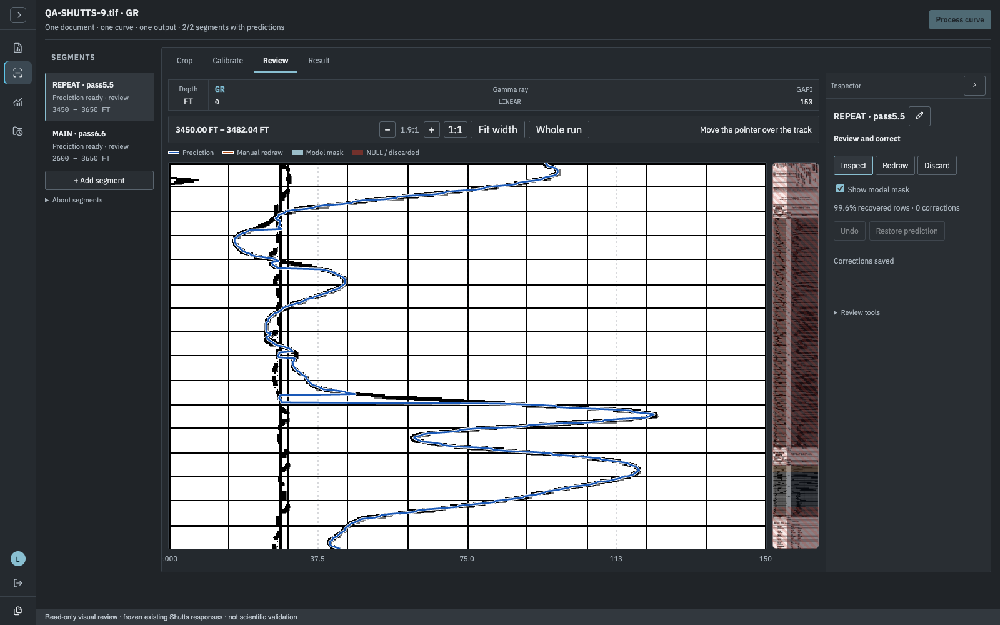
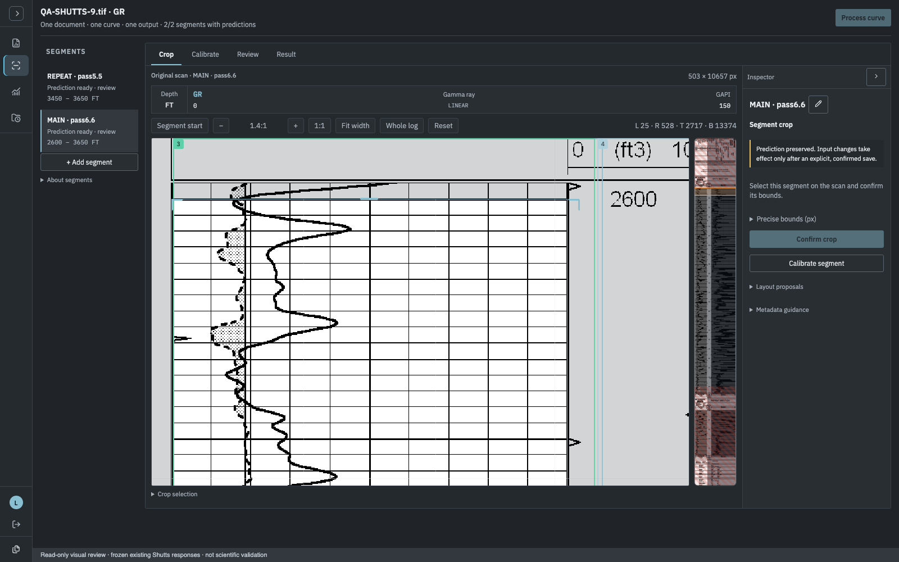
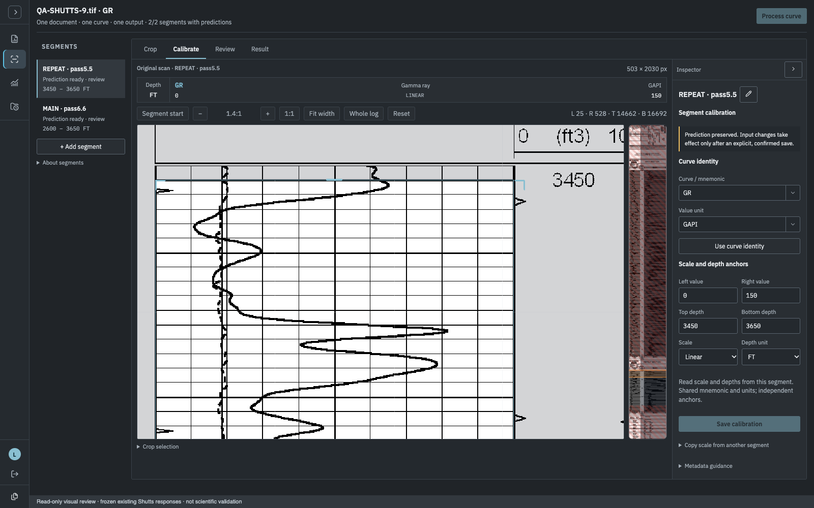
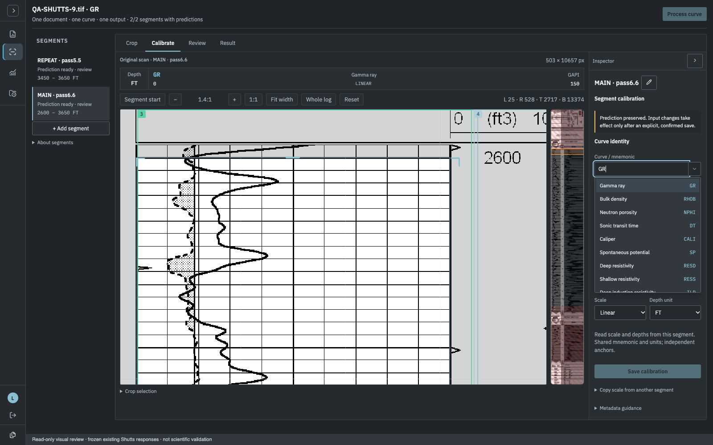
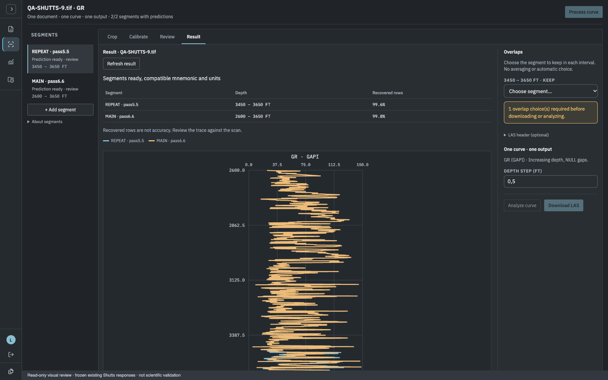
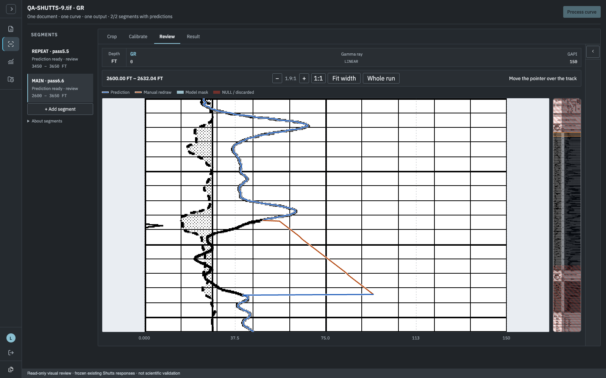
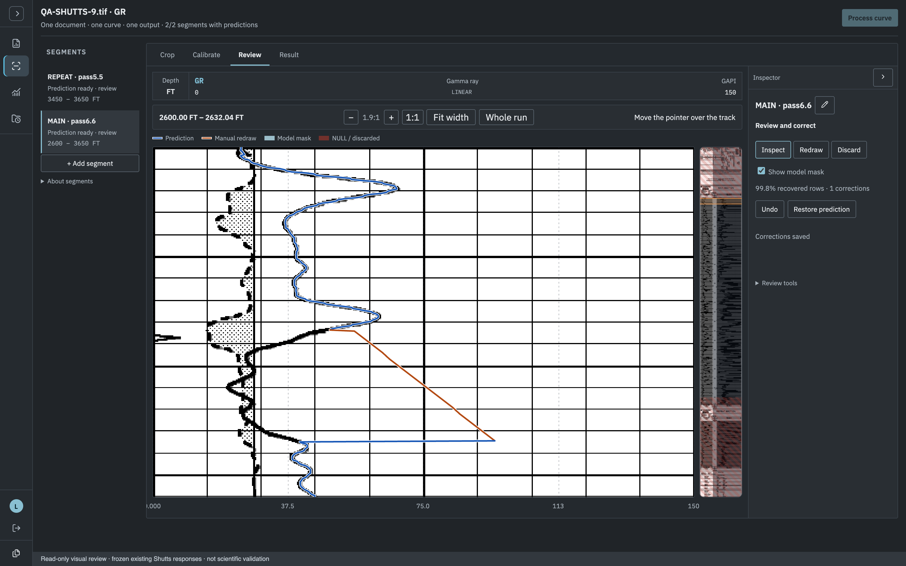

WellSight · geoscience visual candidate
Unapproved frontend iteration on feat/75-geoscience-ui. These images render existing Shutts API responses in a read-only capture: no source/correction edits, new calibration or output requests. They demonstrate interface hierarchy and contrast, not scientific accuracy. Source labels, stored calibration and existing corrections are unchanged.
MAIN · prediction and existing manual correction

REPEAT · prediction over original grid

Saved crop start · source depth labels

Saved crop autofocus is preserved. MAIN and REPEAT remain separately declared overlapping passes, not automatically connected pages. View REPEAT crop start.

Manual calibration · searchable metadata suggestions

Suggestions are operator-declared metadata, not OCR/model identification. No automatic units, bounds, depths or scale transfer.

Joint result · explicit overlap choice

Independent traces are shown together, not averaged or joined by the browser. Download LAS and Analyze curve remain gated by explicit overlap choice.
Collapsed inspector

DPR 2 · same CSS-pixel overlay width

Backing-store dimensions are recorded in the manifest. This is a rendering check, not measurement of prediction fidelity. Principal-owned functional and scientific validation remains separate.